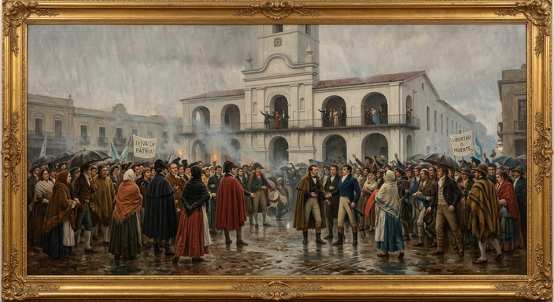
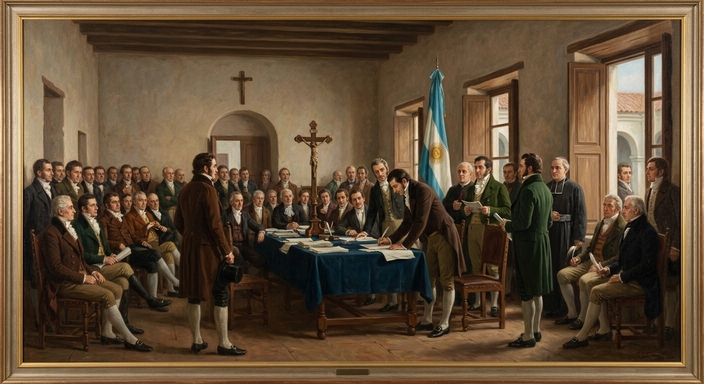
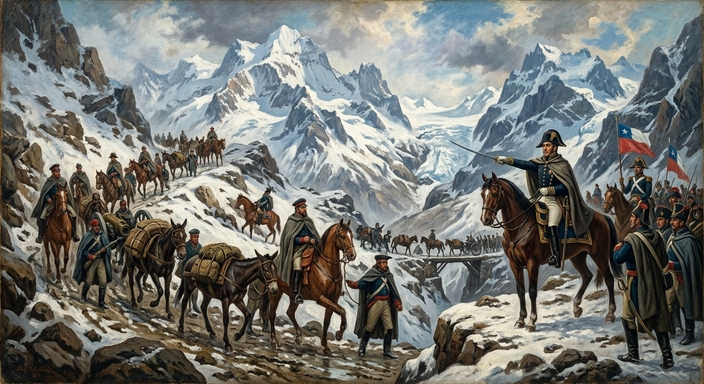

Raíces y Destino: Los Capítulos de la Historia Argentina
La historia de la Argentina es el relato apasionante de una nación en constante transformación. Desde las
antiguas culturas originarias y el periodo colonial hasta la gesta de la independencia y las olas de
inmigración, es el mapa temporal de un pueblo que forjó su identidad a fuerza de convicción, lucha y
sueños de libertad.
Hitos Fundamentales: El Camino de una Nación
-Tiempos Originarios y Colonia: Un vasto territorio habitado por diversos pueblos indígenas —como los
diaguitas, tehuelches, guaraníes y mapuches— que, a partir del siglo XVI, se integró al Imperio
español como el Virreinato del Río de la Plata, configurando un crisol cultural inicial.
-La Revolución y la Independencia: El gran punto de inflexión comenzó con la Revolución de Mayo de
1810 y se consolidó el 9 de julio de 1816, gesta liderada por próceres como Manuel Belgrano y José
de San Martín, cuyo Ejército de los Andes selló también la libertad de Chile y Perú.
-Organización Nacional y Modernización: Tras décadas de conflictos internos, la sanción de la
Constitución Nacional en 1853 sentó las bases del Estado moderno. A fines del siglo XIX y principios
del XX, el país experimentó un crecimiento vertiginoso impulsado por el modelo agroexportador y la
llegada masiva de millones de inmigrantes europeos.
-Siglo XX y Democracia Contemporánea: Un siglo marcado por profundas transformaciones políticas,
sociales y económicas —incluyendo la conquista de derechos laborales, gobiernos militares y el
retorno definitivo a la democracia en 1983—, que consolidaron la memoria colectiva y la vigencia de
los derechos humanos.
Momentos Historicos Importantes
La Revolución de Mayo

El pueblo de Buenos Aires reunido frente al Cabildo durante la semana de mayo de 1810
La Revolución de Mayo de 1810 marcó el inicio del proceso de formación del Estado argentino. Entre el
18 y el 25 de mayo, tras la caída de la Junta Central de Sevilla en España, los criollos de Buenos
Aires destituyeron al virrey Baltasar Hidalgo de Cisneros y destrabaron la creación de la Primera
Junta de Gobierno. Este hito fundamental destituyó el poder colonial ibérico en el Río de la Plata y
dio comienzo a las guerras por la emancipación en todo el continente sudamericano
La Declaración de la Independencia

Firma del Acta de la Independencia en el Congreso de Tucumán el 9 de julio de 1816
El 9 de julio de 1816, los representantes de las Provincias Unidas del Río de la Plata se reunieron
en el Congreso de Tucumán para proclamar formalmente la ruptura de los lazos de dependencia política
con la corona española y cualquier otra dominación extranjera. Este trascendental acto jurídico y
político consolidó la soberanía del territorio, sentando las bases institucionales para la
conformación definitiva de la República Argentina
El Cruce de los Andes

El Ejército de los Andes al mando del General José de San Martín cruzando la cordillera
en 1817
En enero de 1817, el General José de San Martín lideró una de las hazañas militares y logísticas más
extraordinarias de la historia universal: el Cruce de los Andes. Al mando de más de 5.000 soldados,
el Ejército de los Andes atravesó la impresionante cordillera a través de pasos de extrema altitud y
bajas temperaturas. Esta gesta estratégica permitió la liberación de Chile tras la batalla de
Chacabuco y fue la clave fundamental para asegurar la independencia de Sudamérica